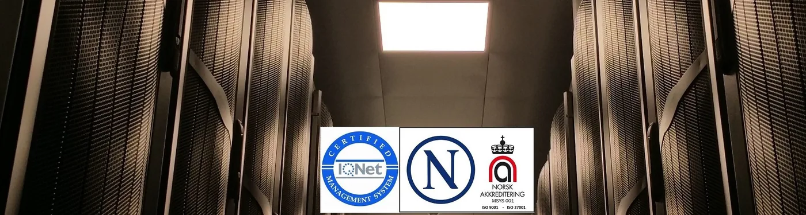
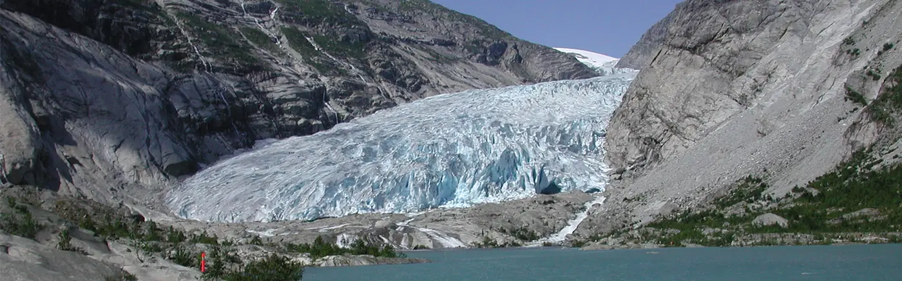

Tjenester
Datasenter, kommunikasjon og teknologi.
Vi leverer infrastruktur og drift i et anlegg bygget for formålet — ikke et ombygd lager.
Datasenter
650 kvm greenfield colocation, etablert i 2015. Her får kundene plass til utstyr i et miljø som er bygget for drift: kraft, kjøling og fysisk sikkerhet.
Vi tar imot både små og større installasjoner, og tilpasser løsningen etter hva som faktisk skal driftes.
- 01ColocationPlass til kabinett og utstyr, med strøm og kjøling.
- 02DriftOvervåking og tilgang til anlegget.
- 03SikkerhetFysisk sikring av arealet.

Kommunikasjon
Datasenteret er ikke bare det stedet der virksomheten huser sine servere. Det er nå det første kontaktpunktet for et stadig økende antall digitale og mobile kunder — og et fundament for nye forretningsmodeller.
Kontaktpunkt
Nær kunden
Infrastruktur som svarer raskt, uansett hvor kunden er.
Fundament
Nye tjenester
Et sted å bygge nye forretningsmodeller på.
Drift
Forutsigbarhet
Anlegg og rutiner som gjør driften mindre hendelsesdrevet.

Teknologi
Teknologien i anlegget er valgt for å holde tjenestene oppe: kraft, kjøling og overvåking, satt sammen til en helhet.
Vi kombinerer egen kompetanse med leverandører og samarbeidspartnere der det gir kunden en bedre løsning.